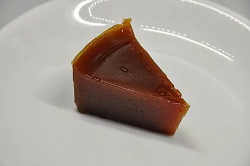

Desserts · Popular in West coast and Deccan
Guava cheese
Guava cheese is made with wild feral guava, a favourite in West coast and Deccan.

How do you make guava cheese?
Guava pulp cooked with sugar and butter until it sets, then cut. A Goan Christmas sweet.
Wild ingredients
- Feral guava (Psidium guajava): in season August to December
Watch the recipe

Video: With Wendy and Shannon on YouTube